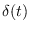
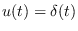
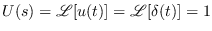
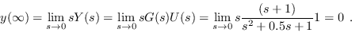

Next: Step response Up: Open Loop LTI Systems Previous: Open Loop LTI Systems Contents Index
Impulse response is the system dynamic response subjected to the input signal equal to a Dicrac delta input (denote as ).
Thus, being the temporary expression of an unit impulse , its Laplace transform results  then, Y(s) = G(s) and the dynamic LTI system response is,
In conclusion, the impulse response of a linear system is equal to the inverse transformation of its plant transfer function.
Consider a linear system whose transfer function is,
To do this, before carrying out a simulation, we will make a study based on the transfer function of the system.
% System transfer function
s=tf('s');
Gs=(s+1)/(s^2+0.5*s+1);
% Poles and Zeros
polesGs=roots(Gs.den{1,1})
La respuesta en la ventana de comandos de Octave es:
polesGs = -0.25000 + 0.96825 i -0.25000 - 0.96825 i
Taking into account the following remark:
Where it is denoted as n the denominator polynomial order and m that corresponding to the numerator.
According to IVT,
According to FVT,

Also, using the impulse Octave command you can determine the dynamic open-loop response of the system for a Dirac delta input, as indicated below.
% System transfer function
s=tf('s');
Gs=(s+1)/(s^2+0.5 s+1);
% Impulse response
impulse(Gs)
obtaining the following graph: